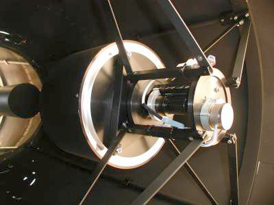
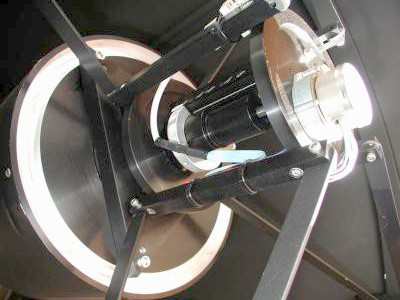
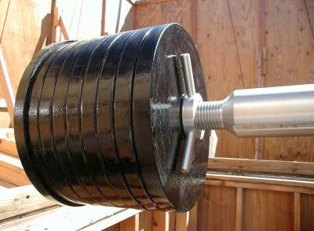

|
|
|
|
This is a view of the optical tube from the front. The 4-vane spider
holding the 12 1/2" secondary mirror is in the foreground,
while the primary mirror is in the background. Reflections of
the secondary and baffle tubes can be seen in the primary mirror.
The spider is attached to a ring which "floats" inside the tube. This ring is anchored to the tube back plate (by the primary mirror) by four "Invar" rods, which maintain the mirror spacing during temperature changes so that the focus position doesn't change during long photographic exposures. The inside of the tube is flat black, though in this photo it has been brightened considerably to show detail. Click on photo for a larger image. |

|
|
This is a closeup view of the secondary support structure.
The secondary is moveable to adjust the focus position. The small stepper motor visible at right-center drives a lead screw which pushes the secondary mirror closer to or farther from the primary mirror. Secondary alignment is achieved via push-pull screws, two of which can be seen at the vertices of the triangular plate in the center of the photo. This alignment is maintained during secondary movement via a linear ball-bearing race, part of which is just barely visible to the right of center in the photo. Click on photo for a larger image. |
 |
|
This is a closer view of the secondary mirror assembly.
Click on photo for a larger image. |
 |
|
These are the counterweights at the end of the declination arm of
the German Equatorial mount. Each individual weight is about 45
pounds, for a total of about 400 pounds. The weight of the Optical
Tube Assembly is about 500 pounds, but the longer lever-arm of the
declination axis extension keeps them in balance.
The large aluminum "nut" with handles keeps the counterweights in place, and can be used to move the counterweights when necessary to rebalance the system, such as when I mount a 7" refractor to the optical tube. Click on photo for a larger image. |
 |
{kind=link}
{kind=link}
{kind=link}